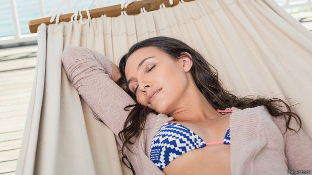
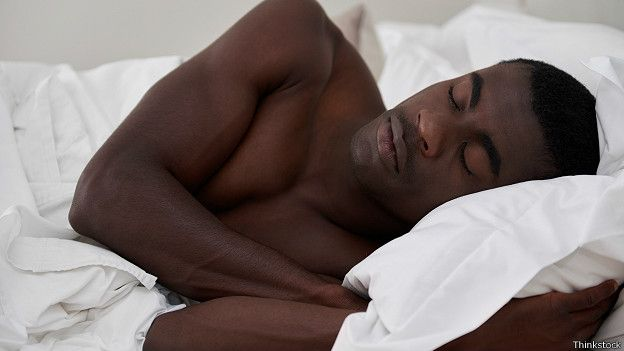
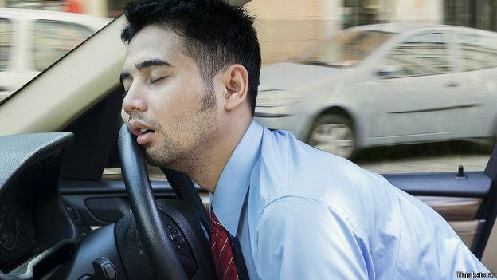

сон і досі залишається загадковим явищем для вчених
Сон і досі залишається одним із найменш вивчених явищ у психології та фізіології. Кореспондент Вільям Парк розповідає про декілька інтригуючих фактів, які нещодавно стали відомі науковцям.
Наука сну – територія загадкова. Дослідники й досі не впевнені, що відбувається у нашому мозку під час сну, чому ми бачимо сни, і що вони означають. Але в останні роки наука відкрила декілька цікавих речей про те, що відбувається з нашим розумом в обіймах Морфея.
10 дивовижних фактів про те, чому нам необхідний повноцінний нічний сон:
- Знайомі запахи допомагають формувати спогади у мозку під час сну, поліпшуючи продуктивність вашого навчання.
- Здригання тіла, коли ми засинаємо – дуже поширене явище. Воно абсолютно не шкідливе і називається "гіпнотичні ривки". 
- Одне невелике дослідження показало, що гра на діджеріду (музичний духовий інструмент аборигенів Австралії, який є довгою дерев'яною або бамбуковою трубою. – Ред.) сприяє поліпшенню сну, тому що зміцнює м'язи, які беруть участь у процесі дихання.
- Аналіз добових біоритмів людини показує, що найбільш природний час для денного сну – між 14.00 та 16.00 годинами. Хоча сон у другій половині дня більше сприяє відновленню організму, невеликий відпочинок близько полудня підвищує творчий потенціал.
- Дослідження показали, що мутація в гені DEC2 дозволяє деяким людям повністю висипатися за чотири години сну вночі. Жодних побічних ефектів на організм від такого короткого сну в них не виявили.
- Проте, навряд чи ви відноситеся до цієї групи людей. Тих, кому пощастило висипатися за декілька годин, не більше 5% на Землі. Більшості людей потрібно 8 годин сну. Але близько 30% не дозволяють собі спати більше шести годин на ніч.
- Одна з теорій про те, чому нам необхідно спати, твердить, що під час сну наш мозок упорядковує спогади та враження, які він отримав протягом дня. Здається, уві сні ми також можемо давати собі раду зі спогадами про неприємні або травмуючі події. 
- Недосипання протягом 12 ночей дорівнює алкогольному сп'янінню
- Деякі дослідники за допомогою аналізу мозкової активності змогли реконструювати відеосюжети, які люди проглядали вдень на каналі YouTube.
- Вчені впевнені, що не за горами той день, коли подібна методика допоможе розшифровувати сни.
- Військові дослідники виявили, що, якщо ви виспитеся заздалегідь
- (наприклад, лягаючи спати раніше протягом декількох днів), позбавлення сну не буде таким важким.
- Якщо 12 ночей поспіль ви спатимете всього по 6 годин, стан вашого організму буде таким, як при наявності 0,1% алкоголю в крові
- невиразне мовлення, порушення рівноваги, погіршення пам'яті. Іншими словами, це стан сп'яніння.
- Прочитати оригінал цієї статті англійською мовою ви можете на сайті BBC Future.
- Статті на цю ж тему